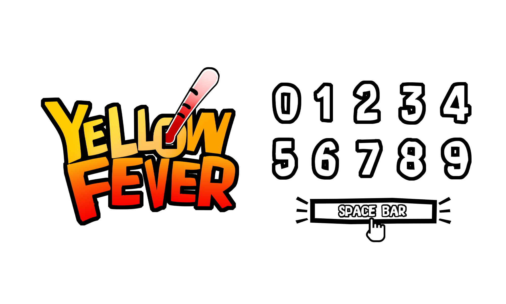
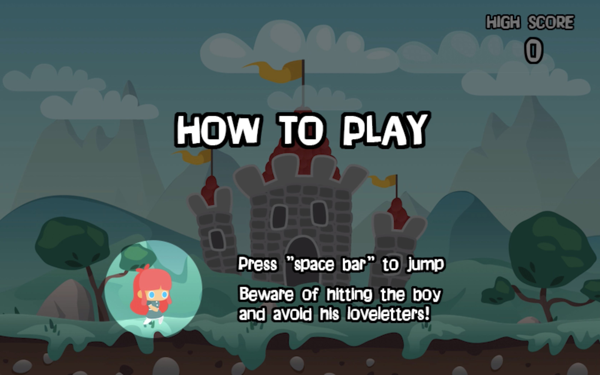

Yellow Fever
Pygame Design Project
Python
Pygame
Visual Design
Nov - Dec 2019
Nayoen Lew
Gabriel Yong
Ophelia Wong
Interface Design

Yellow Fever is a game programmed using Pygame. It was a group project during my MSc course in Human Computer Interaction at the University of Nottingham. The aim was to deploy our object-oriented programming knowledge to design a playful game.
In this project, I was responsible for the programming of the game flow, animation of characters and objects, and the interface design of the game.
01
Ideation
Initially, we discussed the theme and story of the game. We all acknowledged to design a 2D side scrolling game where the player scores points for jumping and avoiding certain obstacles.
Story
A girl wakes up in castle land and suddenly all the boys start courting her. The player has to help her avoid the boys and love letters by jumping over them by pressing space bar. Collision with the "love letter" would result in a deduction of 1 point while collision with the "boy" would result in a game over.
02
Programming
Game Flow
The construct of the game flow has made reference of two sets of codes of the flappy bird game. At first, I created a welcome screen, main game loop and a game over screen based on the flappy bird game flow. I added an instruction screen after the welcome screen so as to tell the players how to play the game. Programming the transition from welcome screen to instruction screen, I learned how to use conditions to determine if the loop of welcome screen is done and to transit to the next screen.
Welcome screen and Instruction screen
Main game loop
Game over screen
Animation of Characters
The image sprites for the motion of girl and boy were based on the flappy bird game. Making the animation of the girl and boy, I figured out how to set up image counts and animation time to show a sequence of images once at a time with desirable screen time and to visualise the motions of characters using a list of images.
As the boy was generated in random distance as soon as he disappeared from screen, it was similar to the idea of generating random pipes in the flappy bird game, except that I added the animation and velocity difference with the side-scroller base in order to display the running motion of it.
Animation of boy
Animation of girl
Animation of Obstacles
For the generation of love letter bullets, my group mate, Nancy, referred to the codes from the boy at the beginning and created random bullets. As we expected the bullets to be shot from the boy, I modified the code so that generation point was following the position of the boy on screen.
For checking the collision of characters (girl and boy) and obstacle (love letter bullet), I learned to apply mask on the images, it can therefore check if the pixels of two images overlap and help justify to minus the score or end the game in the main loop.
Love letter bullet and point deduction
Challenges in animating the countdown screen
The countdown screen before starting the game was added afterwards since it allows player to get ready. I worked with my group mates, Nancy and Gabriel, to program the countdown screen before the main game loop starts. At the beginning, we encountered difficulties as we used clock tick for pausing at the counter number, which at the same time froze all the motions of elements on screen. I eventually resolved this by adding a class of Countdown which referred to the animation of characters to show the sprites of counter number and modified the animation time for manipulating the duration for display. When the counting was done, the game loop began. This solution eventually kept all motions of all the other elements.
Countdown screen
03
Visual Design
I was also in charge of the game interface design, including making the game text, game logo and layouts of different screens.



The code is open sourced on GitHub.
See the code: https://github.com/mickeylaw/Yellow-Fever